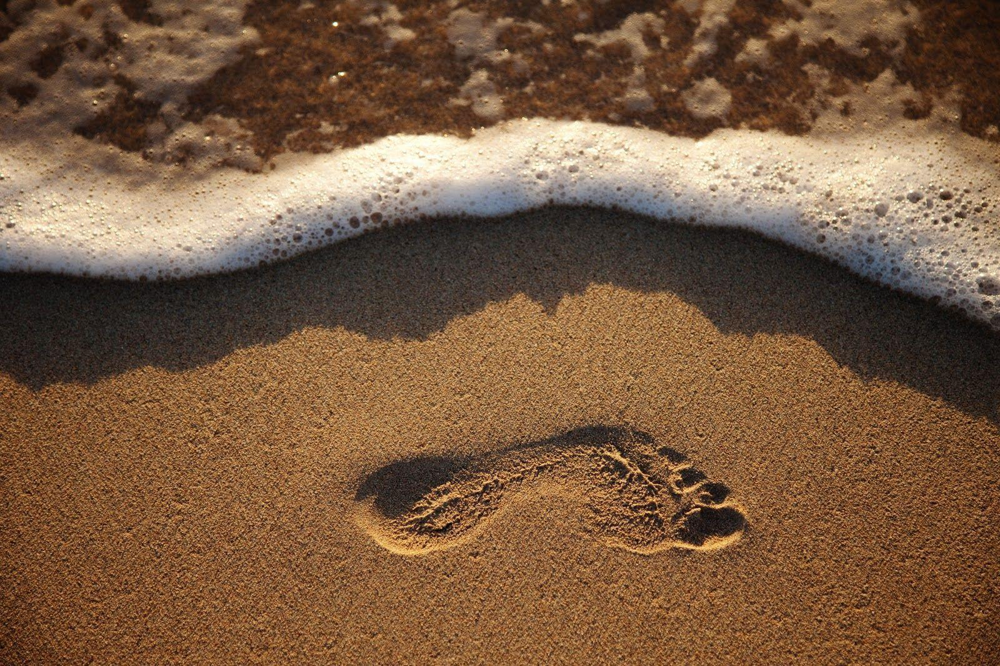
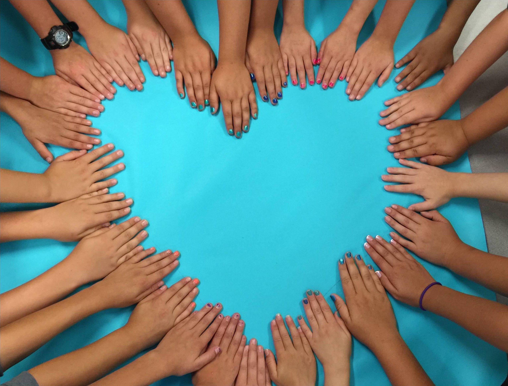

"God, grant me the serenity to accept the things I cannot change, courage to change the things I can, and wisdom to know the difference."
This prayer carries the hope of the people to create a difference, both in their personal lives, and in the lives of others. Courage is the first step to make a difference, and those who dare take that first step are the most courageous.
In the name of these courageous people, we present Niryamana.
Niryamana is an initiative to promote the idea of volunteerism as it originally was. We intend to bring together people who believe in championing the change they want to see in their society. We provide a platform to the people, so that they can come together and voluntarily work for the betterment of the place they live in.
Interested? Please click here to get started.